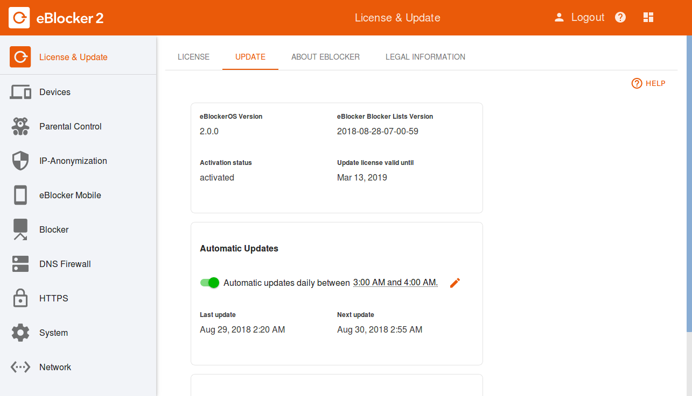

Note: This page has moved to https://eblocker.org/docs/why-do-i-not-receive-any-updates
Deutsch | English
The eBlocker Pro and eBlocker Family receive filter list updates automatically - daily from Monday to Friday. There are no updates on weekends and holidays.
The eBlocker Base operating system update will be performed automatically as soon as a new update is available.
In the eBlocker Settings > Menu "General" you can see which eBlocker filter list version is installed in the tab "Update". Here you can also determine when your eBlocker should check for updates or whether you prefer to perform them manually.

We recommend that you perform the automatic update at night.
If you are an eBlocker Pro or eBlocker Family customer and do not receive any updates for a few days, first check whether you may have set the update mode to "manual". If this is not the case, please create a diagnostic report from your eBlocker and send it to our support team with a short description of your problem: support@eblocker.com
You can create the diagnostic report for your eBlocker in the eBlocker Settings > System > Diagnostics tab. The creation of the report takes about 30 seconds and is then saved as a TGZ file using the free compression program "gzip"*.
* gzip is standard in the UNIX world today because it offers a good compression level and high compression speed.